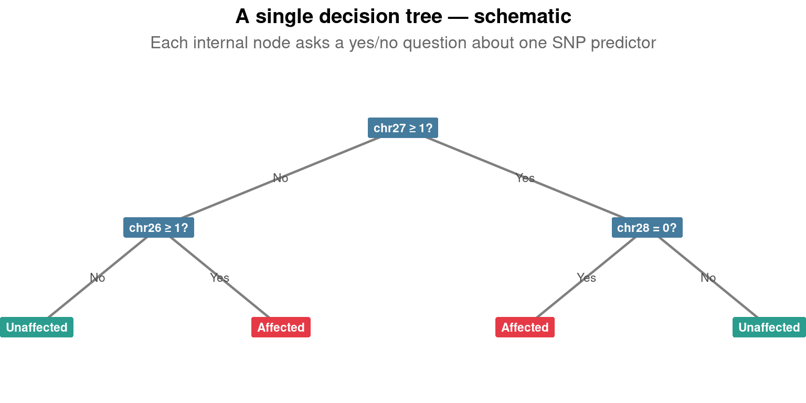
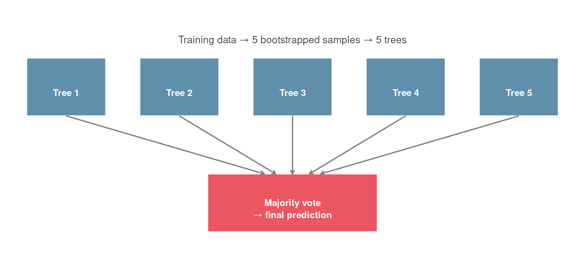
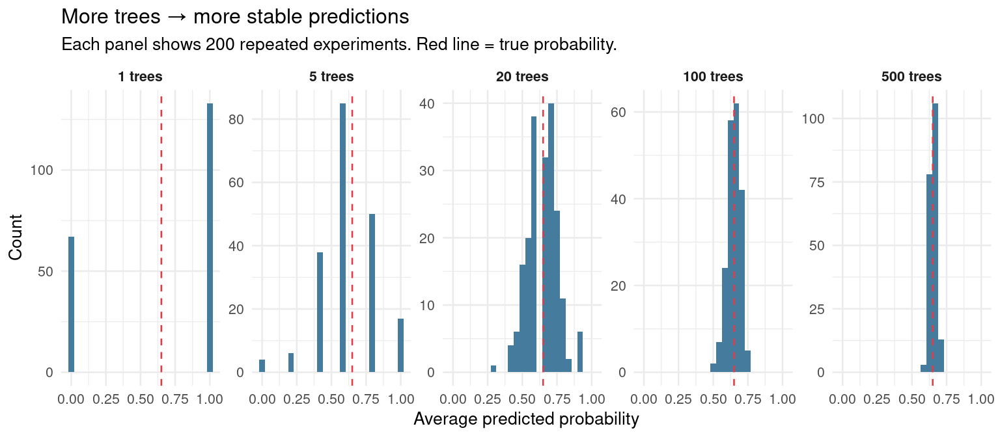
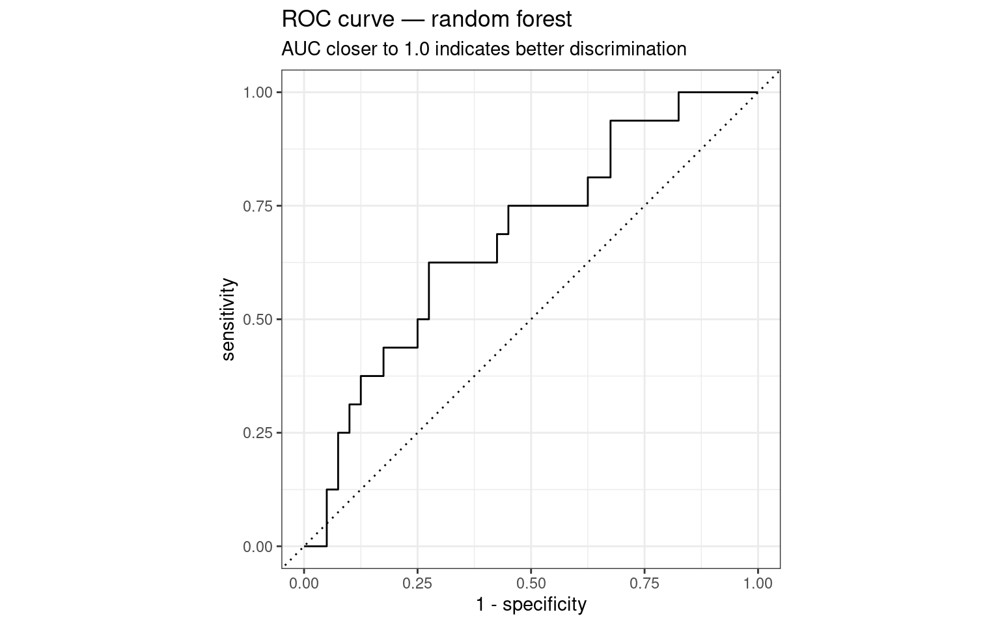
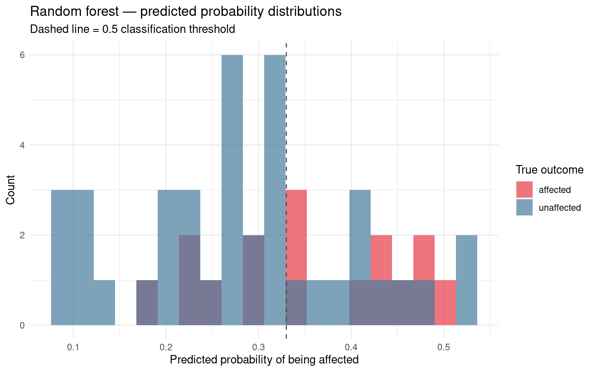
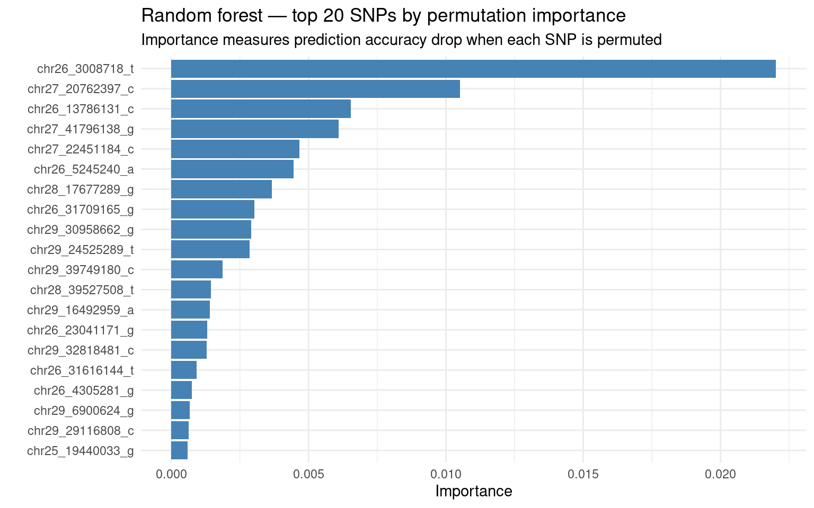

# ── Packages ──────────────────────────────────────────────────────────────────
library(tidymodels)
library(tidyverse)
library(ranger)
library(vip)
library(here)
library(janitor)
# ── Data ──────────────────────────────────────────────────────────────────────
dogs <- read_table(here("data", "dogs_imputed_reduced.tsv")) |>
clean_names()
dogs_model <- dogs |>
select(-fid, -iid, -pat, -mat, -sex) |>
mutate(phenotype = factor(
if_else(phenotype == 2, "affected", "unaffected"),
levels = c("affected", "unaffected")
))
# ── Split ─────────────────────────────────────────────────────────────────────
set.seed(42)
dog_split <- initial_split(dogs_model, prop = 0.8, strata = phenotype)
dog_train <- training(dog_split)
dog_test <- testing(dog_split)
# ── Logistic regression ───────────────────────────────────────────────────────
logistic_recipe <- recipe(phenotype ~ ., data = dog_train) |>
step_naomit(all_predictors(), all_outcomes()) |>
step_normalize(all_numeric_predictors())
logistic_fit <- workflow() |>
add_recipe(logistic_recipe) |>
add_model(
logistic_reg() |>
set_engine("glm") |>
set_mode("classification")
) |>
fit(data = dog_train)
# ── Logistic predictions ──────────────────────────────────────────────────────
# This object is needed for the model comparison section at the end
logistic_preds <- logistic_fit |>
predict(dog_test, type = "prob") |>
bind_cols(
logistic_fit |> predict(dog_test, type = "class")
) |>
bind_cols(dog_test |> select(phenotype))
message("Setup complete — dogs_model, dog_train, dog_test, and logistic_preds are ready")21 Machine Learning — Random Forests
21.1 Introduction
In the previous two workshops you fitted models that produce a single equation — a set of coefficients connecting predictors to the outcome. You could read those coefficients and understand exactly what the model was doing. In this workshop the model produces no equation you can read. Instead it produces a prediction that emerges from the combined votes of hundreds of decision trees. Understanding what you gain — and what you give up — by making this move is the central question of the session.
Random forests take a fundamentally different approach. Rather than fitting one equation to the data, a random forest builds many decision trees — each trained on a random subset of the data and a random subset of the predictors — and combines their predictions. No single tree is particularly accurate, but the combination of many imperfect trees is often more robust than any single model.
This is the first model in the course that cannot be reduced to an interpretable equation. Part of this workshop’s work is making students comfortable with that — and understanding what we gain and what we lose when we move from a coefficient we can read to a prediction we can evaluate but not fully explain.
We return to the cleft lip dataset from Workshop 2. The biological question is identical: can we predict whether a dog is affected by cleft lip from its SNP genotype profile? The model is different. Comparing the two directly — same dataset, same evaluation framework, different model — is the central exercise of this workshop.
21.1.1 From one tree to a forest
Before fitting a random forest it is worth understanding what a single decision tree does. A decision tree repeatedly splits the data on whichever predictor and threshold best separates the two classes at each step. The result is a set of rules — “if SNP A is 0 and SNP B is 2, predict affected” — that are easy to read but highly sensitive to the specific training data. Change the training set slightly and the tree changes dramatically. This is the high variance problem from the bias-variance discussion in the lecture.
Random forests address this by building many trees, each on a different bootstrapped sample of the training data and using a random subset of predictors at each split. Averaging over many unstable trees produces a stable prediction. This is called bagging — bootstrap aggregating — with the additional twist of random feature selection at each split.
21.1.2 Learning Objectives
By the end of this workshop, you will:
- Explain conceptually what a decision tree does and why single trees overfit
- Explain how random forests reduce variance through bagging and random feature selection
- Fit a random forest classifier using
tidymodelsand therangerengine - Tune the
mtryhyperparameter using cross-validation - Interpret feature importance plots and connect them to biological interpretation
- Evaluate a random forest using the same metrics as Workshop 2
- Compare random forest and logistic regression performance on the same dataset
- Articulate when a random forest is preferable to logistic regression and when it is not
21.2 Setup — Getting Started
Clone the GitHub Classroom repository for this workshop using the link on your course page. The dataset and project structure are the same as Workshop 2. Open scripts/02_model.R directly — data exploration was completed in the previous session and does not need repeating.
NoteNew packages
Two packages are new in this workshop. ranger is a fast implementation of random forests and serves as the computational engine behind rand_forest() in tidymodels. vip — variable importance plots — provides tools for extracting and visualising which predictors the random forest considered most informative. Install both with install.packages(c("ranger", "vip")) if needed.
A Conceptual Starting Point
Before fitting any code, it is worth building an intuition for what a decision tree does and why many trees are better than one.
21.2.1 A single decision tree
A decision tree classifies observations by asking a series of yes/no questions about the predictors. At each node it finds the predictor and threshold that best separates the two classes, splits the data, and repeats on each branch until reaching a stopping criterion.

NoteReading this diagram
Each blue node is a decision point asking whether a dog’s genotype at a specific SNP meets a threshold. Genotypes are coded as 0, 1, or 2 — the number of copies of the reference allele. So chr27 ≥ 1 means the dog carries at least one reference allele at that position — it includes both heterozygotes (genotype 1) and homozygous reference dogs (genotype 2), but not homozygous alternate dogs (genotype 0).
Follow the Yes or No branch at each node until reaching a leaf. Green leaves predict unaffected; red leaves predict affected.
The thresholds shown — ≥ 1 and = 0 — were chosen by the algorithm because they best separated affected from unaffected dogs in the training data at that split. A decision tree fitted to a different training sample would likely choose different SNPs and different thresholds.
The problem is that this tree is fitted to one specific training set. If a different set of dogs had been in the training data, the tree would look different. A tree that perfectly classifies the training data will often generalise poorly to new dogs — this is overfitting, the same problem we encountered in Workshops 1 and 2.
21.2.2 From bagging to random forests
Bagging (bootstrap aggregating) addresses the overfitting problem by fitting many trees, each on a different bootstrapped sample of the training data, and averaging their predictions. The diagram below illustrates the process.
A bootstrapped sample is created by sampling from your training data with replacement — meaning the same dog can be selected more than once in a single sample, while other dogs may not appear at all. Imagine writing each dog’s ID on a piece of paper, putting all the papers in a bag, drawing one out and noting it, then putting it back before drawing the next. After drawing 224 times you have a sample of 224 dogs — but some dogs appear two or three times and others do not appear at all. On average, about one third of the original dogs are left out of each sample. Those left-out dogs are the out-of-bag observations.

A random forest adds one further twist: at each split within each tree, only a random subset of predictors is considered. This decorrelates the trees — they are not all making the same splits — which makes the ensemble more robust.
What does a random forest do?Without random feature selection, every tree in a bagged ensemble tends to make the same first split — on whichever SNP is most strongly associated with cleft lip. Trees that start with the same split tend to look similar throughout, even when fitted on different bootstrapped samples. Averaging similar trees does not reduce error much — the same mistakes appear in nearly all of them. By restricting each split to a random subset of predictors, random forests force trees to find different paths through the data. Some trees will miss the most important SNP at a particular split and find a different one instead. The errors are now different across trees, and averaging different errors cancels out far more effectively.

Preparing the Data
Load the synthetic dataset and prepare it for modelling. The preparation steps are identical to Workshop 2 — the same dataset, the same recoding, the same split.
| phenotype | n |
|---|---|
| affected | 80 |
| unaffected | 200 |
NoteWhy the same split?
Using set.seed(42) and the same prop = 0.8 with strata = phenotype produces the same training and test sets as Workshop 2. This matters for the model comparison at the end — both models should be evaluated on identical test data, otherwise differences in performance might reflect the split rather than the models.
Fitting a Random Forest
The tidymodels interface for random forests follows exactly the same recipe-spec-workflow-fit structure as the previous workshops. The key new element is rand_forest(), which replaces logistic_reg().
21.2.3 Hyperparameters
Random forests have three main hyperparameters:
mtry — the number of predictors randomly sampled at each split. Lower values mean more randomness between trees and more decorrelation. Higher values mean each tree uses more information but trees become more similar. The default is \(\sqrt{p}\) for classification, where \(p\) is the number of predictors.
trees — the number of trees in the forest. More trees produce more stable predictions but take longer to fit. Performance typically plateaus well before 1000 trees.
min_n — the minimum number of observations required to split a node. Larger values produce shallower trees.
Notemin_n
the minimum number of observations required to split a node. Larger values produce shallower trees. We fix this at 5, which is a reasonable default for a dataset of this size; in practice min_n has considerably less influence on predictive performance than mtry, and tuning both simultaneously rarely justifies the additional computation.
We tune mtry using cross-validation and fix the others at sensible defaults.
# Recipe — random forests do not require normalisation
# They are scale-invariant: only the rank order of values matters for splits
# We include step_naomit() as a precaution for any missing genotype values
rf_recipe <- recipe(phenotype ~ ., data = dog_train) |>
step_naomit(all_predictors(), all_outcomes())
# Random forest specification
# mtry = tune() searches for the best value by cross-validation
# trees = 500 is a sensible default — enough for stability
# set_engine("ranger") uses the fast ranger implementation
# importance = "permutation" enables variable importance extraction later
rf_spec <- rand_forest(
mtry = tune(),
trees = 500,
min_n = 5
) |>
set_engine("ranger", importance = "permutation") |>
set_mode("classification")
# Workflow
rf_workflow <- workflow() |>
add_recipe(rf_recipe) |>
add_model(rf_spec)21.2.4 Tuning mtry
# 5-fold cross-validation for tuning
set.seed(42)
dog_folds <- vfold_cv(dog_train, v = 5, strata = phenotype)
# Search grid for mtry
# We search across a range from a few predictors to most predictors
rf_grid <- grid_regular(
mtry(range = c(2, 40)),
levels = 15
)
# Tune across the grid
rf_tuned <- rf_workflow |>
tune_grid(
resamples = dog_folds,
grid = rf_grid,
metrics = metric_set(roc_auc)
)The x-axis shows the number of predictors randomly sampled at each split. At very low mtry, each tree uses very little information — trees are highly variable but decorrelated from each other. At high mtry, trees are more accurate individually but more similar to each other.
The optimal mtry balances these two effects. A clear peak in the curve indicates a well-defined optimum. A flat curve means the model is relatively insensitive to this choice.
NoteReflection — Reading the tuning curve
- Does the AUC curve show a clear peak, or is it relatively flat across mtry values?
- How does the shape of this tuning curve compare to the lambda tuning curve from Workshop 1? What does the difference tell you about how sensitive random forests are to this hyperparameter?
- At very low mtry values, each tree uses only a few predictors. What effect would this have on the predictions of individual trees, and why does averaging over many such trees still produce a reasonable result?
| mtry | .config |
|---|---|
| 12 | pre0_mod05_post0 |
Fitting the Final Model
Evaluation
The evaluation framework is identical to Workshop 2. This is deliberate — the same metrics applied to both models makes the comparison meaningful.
21.2.5 Confusion Matrix
21.2.6 Sensitivity, Specificity, and Accuracy
21.2.7 ROC Curve and AUC
A receiver operating characteristic (ROC) curve plots sensitivity (the proportion of truly affected dogs correctly identified) against 1 − specificity (the proportion of unaffected dogs incorrectly flagged as affected) across every possible classification threshold. Each point on the curve corresponds to one threshold value. A model that discriminates perfectly would pass through the top-left corner — sensitivity of 1 and specificity of 1 simultaneously. A model with no discriminative ability would follow the diagonal, performing no better than random assignment.
The area under the ROC curve (AUC) summarises this into a single number. An AUC of 1.0 indicates perfect discrimination; an AUC of 0.5 indicates none. :::

NoteThe Youden Index
The Youden index (also called the J-index) is defined as sensitivity + specificity − 1. It ranges from 0 (no better than chance) to 1 (perfect discrimination). The threshold that maximises the J-index is the point on the ROC curve geometrically closest to the top-left corner — where sensitivity and specificity are jointly highest. It is a common, if not universal, method for selecting a decision threshold; in some applications you may deliberately weight sensitivity or specificity differently depending on the cost of false negatives versus false positives.
# Get all the threshold values
roc_points <- rf_preds |>
roc_curve(truth = phenotype, .pred_affected)
# Find the point closest to the top-left corner
# Youden index — maximises sensitivity + specificity jointly
roc_points |>
mutate(j_index = sensitivity + specificity - 1) |>
slice_max(j_index, n = 1)| .threshold | specificity | sensitivity | j_index |
|---|---|---|---|
| 0.3320333 | 0.725 | 0.625 | 0.35 |
21.2.8 Tweaking Model sensitivity
Truth
Prediction affected unaffected
affected 10 11
unaffected 6 2921.2.9 Predicted Probability Distributions
# Predicted probability distributions by true class
rf_preds |>
ggplot(aes(x = .pred_affected, fill = phenotype)) +
geom_histogram(bins = 20, alpha = 0.7, position = "identity") +
scale_fill_manual(values = c("affected" = "#E63946",
"unaffected" = "#457B9D")) +
geom_vline(xintercept = chosen_threshold,
linetype = "dashed", colour = "grey30") +
labs(
x = "Predicted probability of being affected",
y = "Count",
fill = "True outcome",
title = "Random forest — predicted probability distributions",
subtitle = "Dashed line = 0.5 classification threshold"
) +
theme_minimal()
NoteWhat we cannot extract from a random forest
Logistic regression gave us a coefficient for every SNP — a number with a sign and a magnitude that told us the direction and strength of each SNP’s association with cleft lip. A random forest gives us no such thing. We cannot extract a single equation from 500 trees. We cannot say “each additional copy of the reference allele at chr27 changes the log-odds of cleft lip by -0.57.”
What we can do is ask which predictors the forest relied on most heavily — feature importance — and what the forest predicts for any specific combination of genotypes. These are useful but different. A breeder asking “why was this dog flagged?” can be shown which SNPs contributed most to its predicted probability, but not given the kind of clean coefficient interpretation that logistic regression allows. Whether this matters depends on the application.
Feature Importance
One of the most useful outputs of a random forest is feature importance — a measure of how much each predictor contributed to accurate predictions across all trees. Unlike logistic regression coefficients, importance scores do not have a sign: they tell you which predictors matter, not in which direction.
Permutation importance works by randomly shuffling the values of each predictor in turn and measuring how much prediction accuracy drops. A large drop means the predictor was important — the model was relying on it. A small drop means the predictor can be scrambled without much consequence.
# Extract and plot variable importance
# vip() from the vip package works directly on tidymodels workflow fits
rf_final |>
extract_fit_parsnip() |>
vip(num_features = 20,
aesthetics = list(fill = "steelblue")) +
labs(
title = "Random forest — top 20 SNPs by permutation importance",
subtitle = "Importance measures prediction accuracy drop when each SNP is permuted"
) +
theme_minimal()
NoteReflection — Feature importance
Are the top SNPs by importance clustered on particular chromosomes? Compare this with the top SNPs from the logistic regression coefficient plot in Workshop 2. Do the two models agree on which SNPs matter most?
A SNP with high importance in the random forest but a small coefficient in logistic regression might be important in a non-linear way — for instance, heterozygotes (genotype 1) might be most affected while homozygotes (genotype 0 or 2) are similar to controls. Can you identify any candidates from the importance plot?
Comparing Models
With both models evaluated on the same test set, a direct comparison is now meaningful. This is the central question of the workshop: does the added complexity of the random forest justify itself?
The code takes the predictions each model made on the test set and asks the same question of both: how well does this model’s predicted probabilities separate affected from unaffected dogs? It does this by computing AUC for each model, attaching a label so we know which result belongs to which model, then stacking the two results into a single table for direct comparison.
This is threshold-independent — you are evaluating the quality of the underlying probability estimates, not a particular classification decision - allowing a clean comparison of the models
# Check logistic_preds exists before comparing
# If it does not, run the quick setup code above
if (!exists("logistic_preds")) {
stop("logistic_preds not found — run the quick setup code at the top of this script")
}
# Numeric comparison of AUC
bind_rows(
rf_preds |>
roc_auc(truth = phenotype, .pred_affected) |>
mutate(model = "Random forest"),
logistic_preds |>
roc_auc(truth = phenotype, .pred_affected) |>
mutate(model = "Logistic regression")
) |>
select(model, .estimate) |>
arrange(desc(.estimate))# ROC curves for both models on the same axes
bind_rows(
rf_preds |>
roc_curve(truth = phenotype, .pred_affected) |>
mutate(model = "Random forest"),
logistic_preds |>
roc_curve(truth = phenotype, .pred_affected) |>
mutate(model = "Logistic regression")
) |>
ggplot(aes(x = 1 - specificity,
y = sensitivity,
colour = model)) +
geom_line(linewidth = 1) +
geom_abline(linetype = "dashed", colour = "grey50") +
scale_colour_manual(values = c(
"Random forest" = "#E63946",
"Logistic regression" = "#457B9D"
)) +
labs(
x = "1 - Specificity",
y = "Sensitivity",
colour = NULL,
title = "ROC curves: random forest vs. logistic regression",
subtitle = "Both evaluated on the same held-out test set"
) +
theme_minimal() +
theme(legend.position = "bottom")
ImportantFinal Reflection — Which model would you use?
Write your answers individually before any discussion.
- Which model has higher AUC on the test set? Is the difference large enough to matter biologically for a breeding programme?
- Does either model show systematic bias in the confusion matrix — for instance, consistently missing affected dogs?
- Random forests cannot produce a coefficient table like logistic regression. For the cleft lip breeding application — where you might want to explain to a breeder why a dog was flagged — does this matter?
- You have now applied three machine learning models to biological data: linear regression, logistic regression, and random forests. Write two to three sentences describing a biological scenario where each model would be the most appropriate choice and why.
Random forests have been applied to predict antibiotic resistance from bacterial genomes, species presence from environmental variables, and cancer diagnosis from gene expression profiles. In each case the model performed well but produced no biological insight. A logistic regression on the same data might perform less well but would identify which genes, which environmental variables, or which expression patterns were most predictive — information a biologist could act on.
Summary
21.2.10 Key Concepts
Decision trees classify by repeatedly splitting data on whichever predictor and threshold best separates the classes. Single trees overfit — they are sensitive to the specific training data.
Bagging reduces overfitting by fitting many trees to bootstrapped samples and averaging predictions. Random forests extend this by also randomly sampling predictors at each split, which decorrelates the trees and improves the ensemble.
mtry is the key tuning parameter — the number of predictors randomly considered at each split. It is chosen by cross-validation on the training data, not by evaluating on the test set.
Feature importance measures how much each predictor contributes to prediction accuracy. Unlike logistic regression coefficients, importance scores have no sign — they tell you which predictors matter, not in which direction.
Model comparison is only meaningful when both models are evaluated on the same held-out test set. A model that is more complex but not more accurate does not justify its additional complexity — especially when interpretability is lost in the process.
21.2.11 Skills Checklist
By the end of this workshop you should be able to:
Additional Resources
Tidymodels:
- Random forests in tidymodels: https://www.tidymodels.org/
- The ranger package: https://cran.r-project.org/package=ranger
Concepts:
- Greener et al. (2022) Nature Reviews Molecular Cell Biology: https://doi.org/10.1038/s41580-021-00407-0
NoteA note on complexity
Random forests are more powerful than logistic regression in many settings. They are also less interpretable, harder to explain to non-technical audiences, and require more computational resources. In biology, where mechanistic understanding often matters as much as predictive accuracy, the trade-off between power and interpretability is not always resolved in favour of the more complex model. The right choice depends on the question, the audience, and the consequences of being wrong.